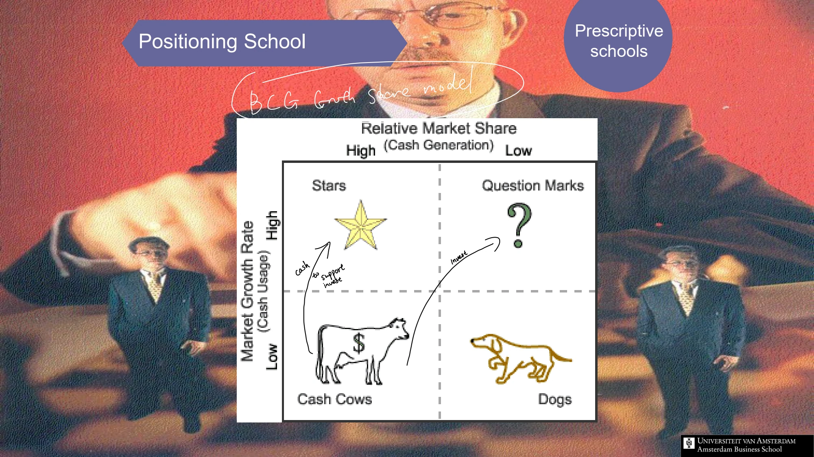

The framework
| Quadrant | Growth / relative share | Question for allocation |
|---|---|---|
| Stars | High growth / high relative share | What investment is needed to sustain the position as the market develops? |
| Question marks | High growth / low relative share | Can a stronger position be achieved at an acceptable resource cost? |
| Cash cows | Low growth / high relative share | How can cash generation be maintained and used appropriately? |
| Dogs / pets | Low growth / low relative share | Is there a defensible role, a route to improvement or a reason to reduce commitment? |
Key distinctions
The axes and bubbles
Relative market share compares a business with a relevant competing position rather than treating its absolute share in isolation. The lecture's bubble representation uses the proportion of company revenue generated by a business. Keep that encoding distinct from market size, which appears in other portfolio representations.
The success sequence
The teaching material uses movements between quadrants to discuss development and cash allocation. A high-growth business may need resources before it generates them; a strong position in a mature market may help finance other opportunities. This is a portfolio logic, not an automatic sequence every business follows.
How to use it
- Define each business and its relevant market consistently.
- Plot growth and relative share using a common time period.
- Record resource needs, cash contribution and inter-business links.
- Treat the quadrant as an input to a reasoned allocation decision.
Keep in mind
High share does not guarantee cash generation, and low share does not by itself justify exit. The matrix omits many capability, synergy and uncertainty considerations.
What distinguishes a star from a question mark?
Reveal the explanation
Both occupy high-growth markets, but a star has high relative market share while a question mark has low relative share.
Read the classroom original
Complete pages from the supplied lecture slides. Select a page to read, enlarge or browse its extracted text. Page numbers refer to the PDF’s physical page order.
